Chapter 6: Capital Allocation to Risky Assets 完整学习笔记
本章核心问题
你有一笔钱，该拿多少比例投资风险资产（如股票基金），留多少在无风险资产（如国库券 T-bills）？
这个决定叫做 资本配置决策（capital allocation decision）。
投资组合的构建分两大任务：
- 资本配置：安全资产 vs 风险资产的比例 → 本章内容
- 风险组合的构成：风险资产内部怎么选 → 后续两章的内容
所以本章只关心一个比例：风险资产占总资产的多少。
这个比例的选择因人而异——一个年轻的高薪程序员和一个即将退休的老人，面对同样的股票基金，会做出不同的选择。原因是他们对风险的态度不同。因此在讨论怎么分配之前，我们首先要搞清楚什么是风险厌恶、怎么衡量它。
一、风险与风险厌恶（Risk and Risk Aversion）
1.1 投机、赌博与公平博弈
书中首先区分了三个容易混淆的概念。
投机（speculation） 的定义是：为了获得相称的回报而承担相当大的风险。这里有两个关键词："相当大的风险"是说风险大到会影响你的决策；"相称的回报"是说你期望赚到的钱超过无风险投资能给你的——也就是存在一个正的 风险溢价（risk premium）。
$\text{风险溢价} = E(r) - r_f$
比如股票基金期望收益 10%，T-bills 收益 2%，风险溢价就是 8%。
赌博（gambling） 则是为了风险本身的刺激感而下注，没有相称的回报。关键区别在于赌博缺乏"commensurate gain"。
两者之间的分界线是 公平博弈（fair game）：风险溢价恰好为零的风险投资——期望收益刚好等于无风险收益率，承担了风险但没有额外补偿。
举个简单例子：抛硬币，正面赢 100 块，反面输 100 块。期望收益 $= 0.5 \times 100 + 0.5 \times (-100) = 0$。承担了风险，但期望赚到的额外报酬是零。
| 概念 | 定义 | 风险溢价 | 风险厌恶者会接受吗？ |
|---|---|---|---|
| 投机（speculation） | 为了相称的回报而承担风险 | 正（> 0） | 会，只要溢价够大 |
| 赌博（gambling） | 为了刺激感而承担风险 | 无 | 不会 |
| 公平博弈（fair game） | 风险溢价恰好为零 | 零（= 0） | 不会 |
核心结论：风险厌恶和投机可以共存（risk aversion and speculation are consistent）。 只要风险溢价足够大，即使风险很高，风险厌恶者也愿意承担。我们因此应该期望更高的风险对应更高的风险溢价。
1.2 效用函数（Utility Function）
不同投资者对风险的容忍度不同，怎么把这种主观偏好变成可以计算的东西？
书中引入了 效用（utility） 的概念。效用就是一个"满意度分数"——给每个投资组合打一个分，分越高你越喜欢。
打分规则很直觉：期望收益越高 → 分越高；波动率越大 → 分越低。
书中采用的具体打分公式：
$U = E(r) - \frac{1}{2}A\sigma^2 \tag{6.1}$
这就是本章最核心的公式之一，叫做 效用函数（utility function）。
各项含义：
- $U$：效用值（满意度分数）
- $E(r)$：组合的期望收益率
- $\sigma^2$：组合收益率的方差（波动率的平方）
- $A$：风险厌恶系数（risk aversion coefficient），代表你对风险的敏感程度
- $\frac{1}{2}$：约定俗成的缩放常数，不影响结论
使用时收益率必须用小数形式，不能用百分比。比如 10% 要写成 0.10。
三类投资者：
- $A > 0$：风险厌恶者（risk averse）——绝大多数投资者属于这类。$A$ 越大越保守，因为 $\frac{1}{2}A\sigma^2$ 这个惩罚项越重，同样的波动率扣掉的分越多。
- $A = 0$：风险中性者（risk neutral）——完全不在乎风险，只看期望收益。
- $A < 0$：风险爱好者（risk lover）——风险反而让他们开心，觉得刺激。
典型投资者的 $A$ 大约在 2.0 到 4.0 之间。
无风险资产的效用：$\sigma = 0$，所以 $U = E(r) - 0 = E(r)$。无风险资产的效用就等于它的收益率本身，不受 $A$ 影响。
1.3 用效用打分的具体例子
书中 Table 6.1 给出了三个风险组合（无风险利率 $r_f = 2%$）：
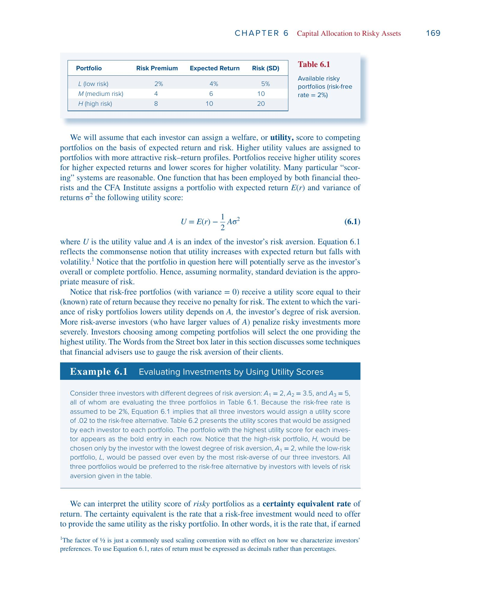
我们来手动算一下 $A=2$ 的投资者对各组合的打分：
对组合 H（$E(r)=0.10$，$\sigma=0.20$）：
$U = 0.10 - \frac{1}{2} \times 2 \times 0.20^2 = 0.10 - \frac{1}{2} \times 2 \times 0.04 = 0.10 - 0.04 = 0.06$
对组合 M（$E(r)=0.06$，$\sigma=0.10$）：
$U = 0.06 - \frac{1}{2} \times 2 \times 0.10^2 = 0.06 - 0.01 = 0.05$
对组合 L（$E(r)=0.04$，$\sigma=0.05$）：
$U = 0.04 - \frac{1}{2} \times 2 \times 0.05^2 = 0.04 - 0.0025 = 0.0375$
所以 $A=2$ 的投资者最喜欢 H（得分 0.06 最高）。风险厌恶程度低的人愿意承受大波动换取高收益。
无风险资产：$U = 0.02 - 0 = 0.02$，对所有人都一样。
Table 6.2 展示了完整的打分结果：
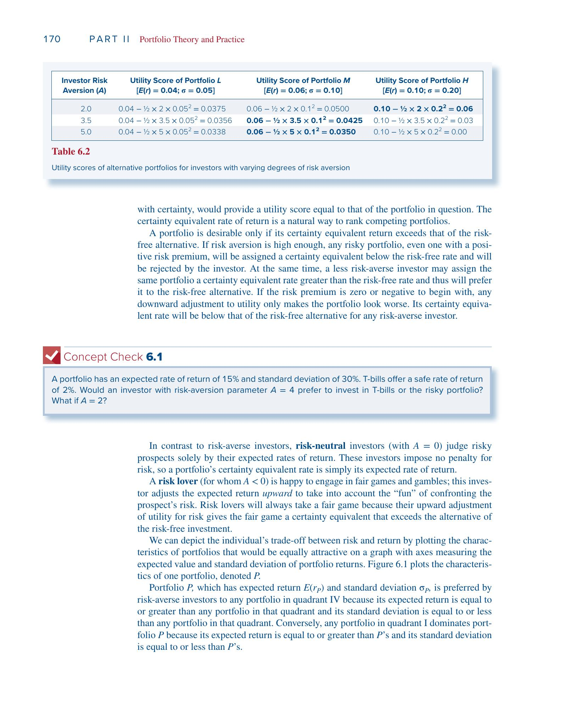
以组合 H 为例，看 $A$ 大小的影响：
- $A=2$：$U = 0.06$（很满意，选它）
- $A=3.5$：$U = 0.03$（一般般）
- $A=5$：$U = 0.00$（跟无风险差不多，不值得冒险）
同样的组合，$A$ 越大的人越"看不上"它，因为风险惩罚太重了。
1.4 确定性等价收益率（Certainty Equivalent Rate）
效用值 $U$ 有一个非常直觉的解读方式。
如果你算出某个风险组合的效用是 0.06，这个数字意味着什么？把它当成一个无风险收益率来理解——如果一个无风险投资能给你确定的 6% 收益，它的效用就是 $U = 0.06$（因为 $\sigma=0$）。
所以效用 0.06 的意思是：这个风险组合在你眼里，跟确定拿到 6% 的无风险投资一样好。这个 6% 就叫做该风险组合的 确定性等价收益率（certainty equivalent rate）。
用人话说：
"你最少要给我多高的保底收益，我才愿意放弃这个风险组合？"
判断标准：
- 确定性等价 $> r_f$ → 风险组合值得投资，因为它在你心里比无风险资产好
- 确定性等价 $< r_f$ → 不值得投资，你宁可拿无风险利率
- 确定性等价 $= r_f$ → 无所谓，两者一样好
验证： $A=5$ 的投资者对组合 H 打分 $U=0.00$，即确定性等价 0%。而 T-bills 给 2%，比 0% 高，所以这个投资者不会选 H。$A=2$ 的投资者对 H 打分 $U=0.06$，即确定性等价 6%，远高于 2%，所以很乐意持有 H。
为什么确定性等价有用？ 它把"有风险的组合"和"无风险的收益率"放到了同一个标尺上，让你可以直接比较。
如果一个组合的风险溢价本身就是零甚至为负，那对任何风险厌恶者来说，惩罚项只会让它变得更差。确定性等价必然低于 $r_f$，任何 $A>0$ 的人都不会碰它——这就回到了公平博弈的结论。
1.5 无差异曲线（Indifference Curve）
在 $E(r)$-$\sigma$ 平面上，给定一个效用水平（比如 $U=0.02$），所有提供该效用的 $(\sigma, E(r))$ 组合连成一条曲线，叫做 无差异曲线（indifference curve）。"无差异"的意思是：曲线上任意两个点，投资者都觉得无所谓。
从效用公式反解：
$E(r) = U + \frac{1}{2}A\sigma^2$
这是一条开口向上的抛物线。$\sigma$ 越大，需要的 $E(r)$ 就越高来维持同样的效用。
例子： $A=4$、$U=0.02$ 时，$\sigma=0.20$ 需要多高的 $E(r)$？
$0.02 = E(r) - \frac{1}{2} \times 4 \times 0.20^2$ $E(r) = 0.02 + 0.08 = 0.10$
标准差 20% 的组合，期望收益至少要 10%，这个投资者才觉得"跟无风险一样好"。
Table 6.3 列出了 $A=4$、$U=0.02$ 时的几个点：
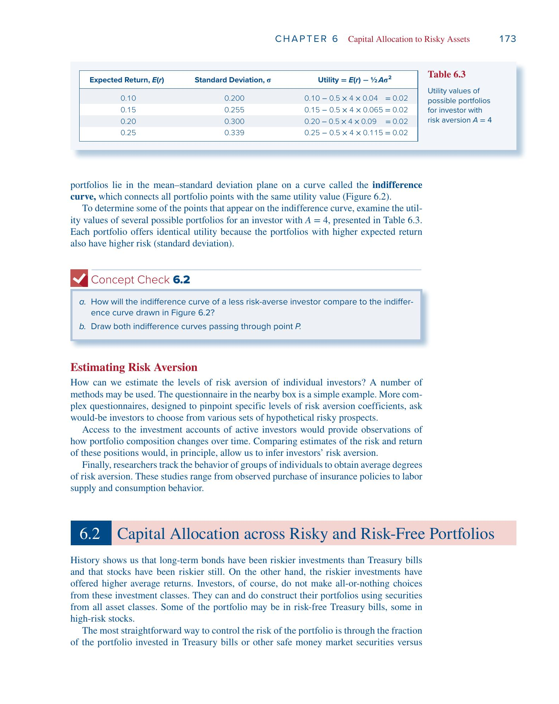
关于 $U$ 在无差异曲线上是否会变的问题：
- 在一条无差异曲线上：$\sigma$ 在变，$E(r)$ 也在变，但两者配合得刚好让 $U$ 不变——这就是"无差异"的定义
- 在不同的无差异曲线之间：$U$ 不同，越往西北（左上方）的曲线 $U$ 越大
- 当你沿着 CAL 移动（调整 $y$）：$\sigma$ 和 $E(r)$ 都在变，$U$ 也在变，你要找 $U$ 最大的那个点
Figure 6.1 和 6.2 展示了基本概念：
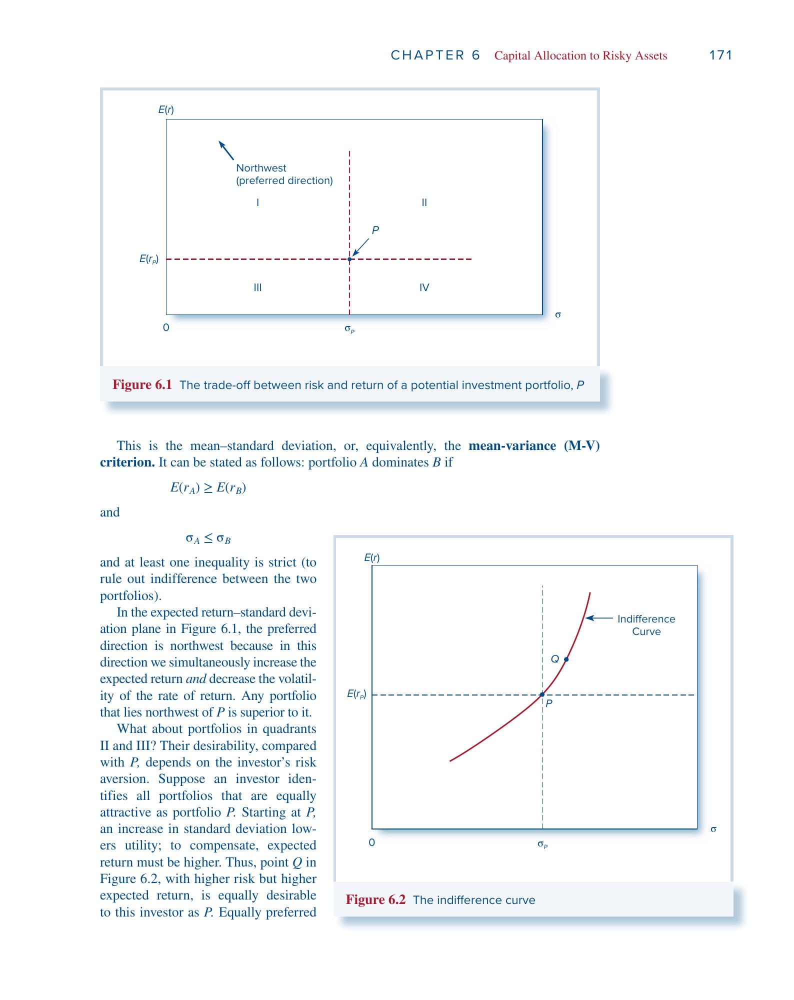
无差异曲线的三个关键性质：
性质一：西北方向更好。 在 $E(r)$-$\sigma$ 平面上，往左是降低风险，往上是提高收益，所以西北方向同时改善了两者。任何在一个组合左上方的组合都**支配（dominate）**它。这个判断标准叫 均值-方差准则（mean-variance criterion, M-V criterion）：组合 A 支配组合 B，当且仅当 $E(r_A) \geq E(r_B)$ 且 $\sigma_A \leq \sigma_B$，且至少一个不等式严格成立。
性质二：更高的无差异曲线代表更高的效用。 投资者的目标是到达尽可能高的无差异曲线。
性质三：$A$ 越大，曲线越陡。 Table 6.5 和 Figure 6.6 对比了 $A=2$ 和 $A=4$ 的无差异曲线：
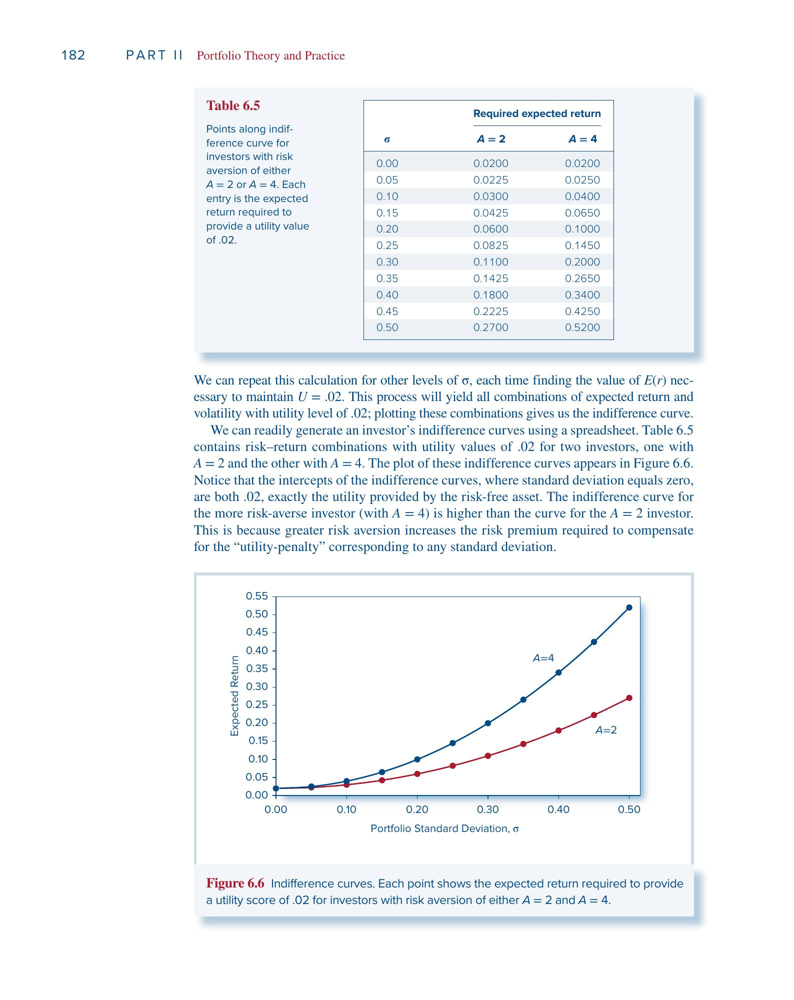
比如 $\sigma = 0.20$ 时：
- $A=2$：需要 $E(r) = 0.02 + 0.5 \times 2 \times 0.04 = 0.06$（6% 就够了）
- $A=4$：需要 $E(r) = 0.02 + 0.5 \times 4 \times 0.04 = 0.10$（要 10% 才行）
同样的风险，$A=4$ 的人要求的补偿更高，曲线更陡。直觉上就是：保守的人对风险增加特别敏感，必须给他更多收益他才愿意接受。
1.6 如何估计投资者的 $A$
精确测量 $A$ 是很困难的，但有三种近似方法：
方法一：问卷调查。 最常用。书中有一个整版的专栏 "What Level of Risk Is Right for You?"，给了 8 道选择题。
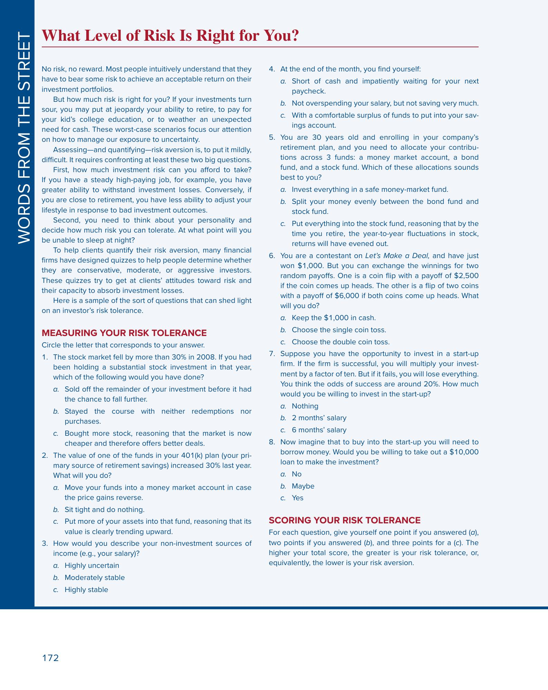
每题 (a) 得 1 分，(b) 得 2 分，(c) 得 3 分。总分越高，风险容忍度越高（$A$ 越小）。这类问卷只能大致分类，没法精确给出 $A=3.2$ 这样的数字。更复杂的问卷设计假想投资场景，从投资者的选择中反推具体的 $A$ 值。
方法二：观察实际投资行为。 如果能看到投资者的真实账户，观察持仓比例，结合对市场风险和收益的估计，用最优配置公式反解：
$A = \frac{E(r_P) - r_f}{y^* \cdot \sigma_P^2}$
方法三：群体行为研究。 观察大量人的行为——买保险的比例、劳动供给、消费习惯等——来估计群体平均的风险厌恶水平。
二、构建完整组合（Complete Portfolio）
2.1 基本设定
假设你已经有了一个确定好的风险组合 $P$（Portfolio），也有一个无风险资产 $F$。你要决定的是：总资产中拿多少比例 $y$ 放在 $P$ 上，剩下 $1-y$ 放在 $F$ 上。两者合在一起就是 完整组合（complete portfolio），记为 $C$。
符号说明：
- $r_f$：risk-free rate，无风险收益率（确定的，没有随机性）
- $r_P$：风险组合 $P$ 的收益率（随机的，事先不知道具体赚多少）
- $r_C$：完整组合 $C$ 的收益率（也是随机的，但波动比 $r_P$ 小）
- $E(r_P)$：$P$ 的期望收益；$\sigma_P$：$P$ 的标准差
- $E(r_C)$：$C$ 的期望收益；$\sigma_C$：$C$ 的标准差
一句话总结三者关系：你有一笔钱，一部分买了无风险资产（收益 $r_f$），一部分买了风险组合（收益 $r_P$），两部分加在一起就是你的完整组合（收益 $r_C$）。
2.2 数值例子
书中用了一个具体例子：总资产 $300,000，配置如下：
- $90,000 在货币市场基金（无风险）
- $210,000 在风险资产：$113,400 股票 + $96,600 长期债券
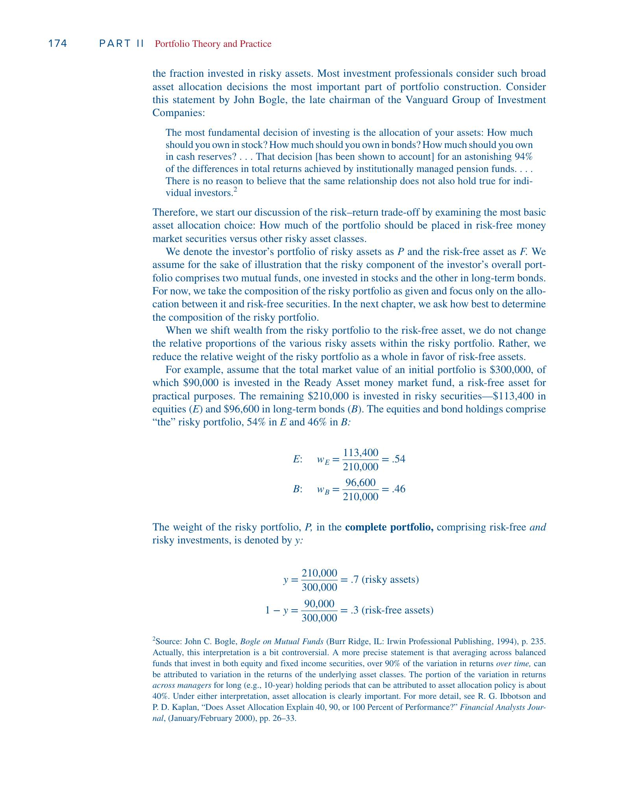
风险组合内部比例：$w_E = 113400/210000 = 0.54$（54% 股票），$w_B = 96600/210000 = 0.46$（46% 债券）。
风险组合在完整组合中的占比：$y = 210000/300000 = 0.7$。
2.3 调整 $y$ 时内部比例不变
这是一个非常重要的概念。书中 Example 6.2 详细演示：
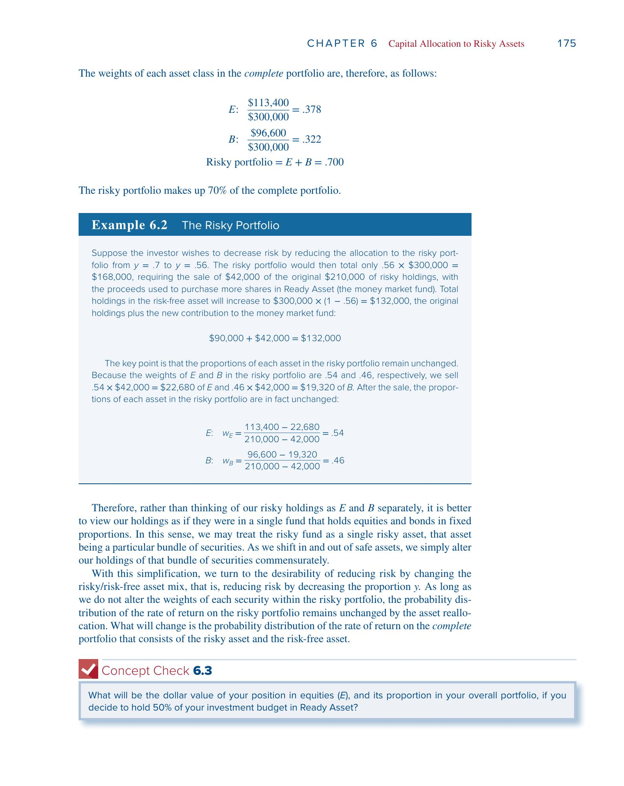
假设把 $y$ 从 0.7 降到 0.56，需要卖出 $42,000 的风险资产。按原来的比例卖：股票卖 $0.54 \times 42000 = $22,680$，债券卖 $0.46 \times 42000 = $19,320$。卖完之后验证内部比例：$w_E = (113400-22680)/(210000-42000) = 0.54$，没变！
这意味着： 你可以把风险组合 $P$ 整体当作一个单一的风险资产来对待。调整 $y$ 就像调节一个旋钮——往左拧更保守，往右拧更激进。但不管怎么拧，$P$ 内部的"配方"不变。问题变成了只有两个东西之间的选择。
2.4 完整组合的期望收益和标准差
完整组合的收益率（加权平均）：
$r_C = y \cdot r_P + (1-y) \cdot r_f \tag{6.2}$
取期望并整理：
$E(r_C) = r_f + y[E(r_P) - r_f] \tag{6.3}$
含义：完整组合的期望收益 = 无风险利率（保底） + 你选择承担的那部分风险溢价。$y$ 越大，承担的溢价比例越大。$y=0$ 只拿无风险利率，$y=1$ 拿到完整的风险溢价。
标准差：
$\sigma_C = y \cdot \sigma_P \tag{6.4}$
完整组合的波动全部来自风险部分，与 $y$ 成正比。这么简单是因为无风险资产标准差为零且跟风险资产无相关性。统计学规则：随机变量乘以常数，标准差也乘以同样的常数。
代入数值（$r_f = 2%$，$E(r_P) = 10%$，$\sigma_P = 22%$）：
| $y$ | $E(r_C)$ | $\sigma_C$ |
|---|---|---|
| 0 | 2% | 0% |
| 0.25 | 4% | 5.5% |
| 0.5 | 6% | 11% |
| 0.75 | 8% | 16.5% |
| 1.0 | 10% | 22% |
期望收益和标准差都在线性增长。想多赚钱？必须同时接受更大的波动。
三、资本配置线（Capital Allocation Line, CAL）
3.1 CAL 的定义与画法
把不同 $y$ 值对应的 $(\sigma_C, E(r_C))$ 画在 $E(r)$-$\sigma$ 平面上。
两个端点：
- $y=0$：$(\sigma_C=0, E(r_C)=2%)$，就是无风险资产 $F$，在纵轴上
- $y=1$：$(\sigma_C=22%, E(r_C)=10%)$，就是风险组合 $P$
因为两个公式都是 $y$ 的线性函数，中间的点全部落在一条直线上，从 $F$ 连到 $P$。这条直线就叫 资本配置线（Capital Allocation Line, CAL）。
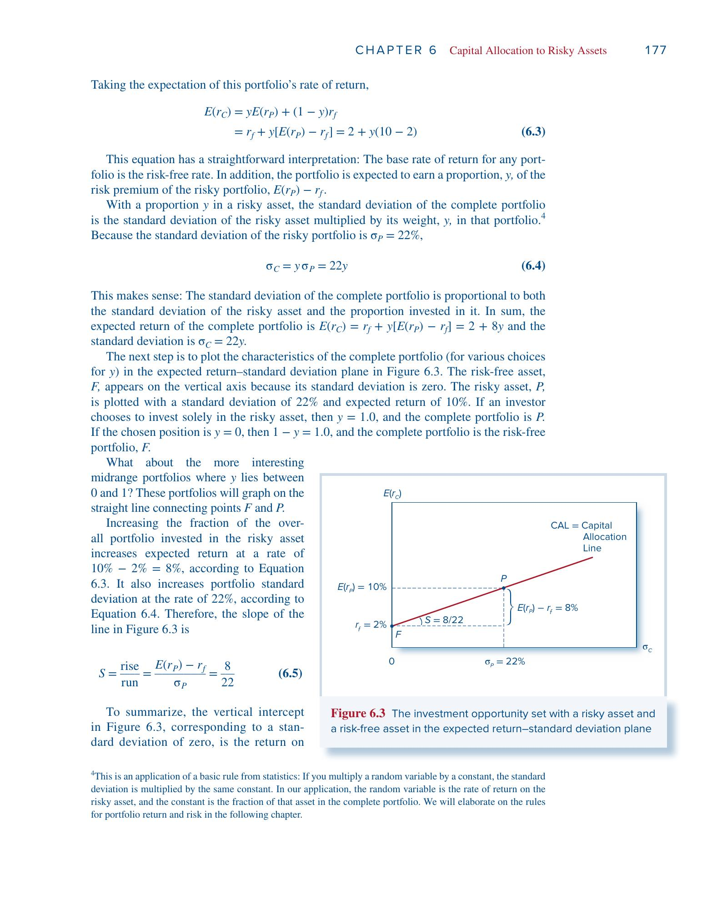
3.2 CAL 的斜率 = Sharpe Ratio
$S = \frac{E(r_P) - r_f}{\sigma_P} = \frac{10 - 2}{22} = \frac{8}{22} \approx 0.36 \tag{6.5}$
这个斜率叫做 报酬-波动率比率（reward-to-volatility ratio），更常见的名字是 Sharpe ratio，以 William Sharpe 命名。
Sharpe ratio 的含义：每多承担 1% 的标准差，你能多获得多少期望收益。 在这个例子中，$S = 0.36$ 意味着每多承受 1 个百分点的标准差，多拿 0.36 个百分点的期望收益。
重要性质：CAL 上每一个点的 Sharpe ratio 都一样。 验证：$y=0.5$ 时 $S = (6-2)/11 = 0.36$；$y=0.25$ 时 $S = (4-2)/5.5 = 0.36$。数学上 $y$ 约掉了：
$S_C = \frac{y[E(r_P)-r_f]}{y\sigma_P} = \frac{E(r_P)-r_f}{\sigma_P}$
所以不管怎么分配，Sharpe ratio 都由风险组合 $P$ 本身决定，跟 $y$ 无关。
CAL 的方程：
$E(r_C) = r_f + \frac{E(r_P)-r_f}{\sigma_P} \cdot \sigma_C = 2% + \frac{8}{22}\sigma_C \tag{6.6}$
CAL 的直觉含义： CAL 就是你面前所有可行选择的菜单。所有选择的"性价比"（Sharpe ratio）都一样，你不是在选性价比，你是在选你愿意承受多大的风险。投资者希望 CAL 越陡越好（斜率越大，同样的风险对应更高的收益）。
3.3 杠杆（Leverage）：$y > 1$ 的情况
$y > 1$ 意味着 $1-y < 0$——你在无风险资产上的头寸是负的，即借钱投资。
书中 Example 6.3：本金 $300,000，借 $120,000，共 $420,000 投入 $P$。
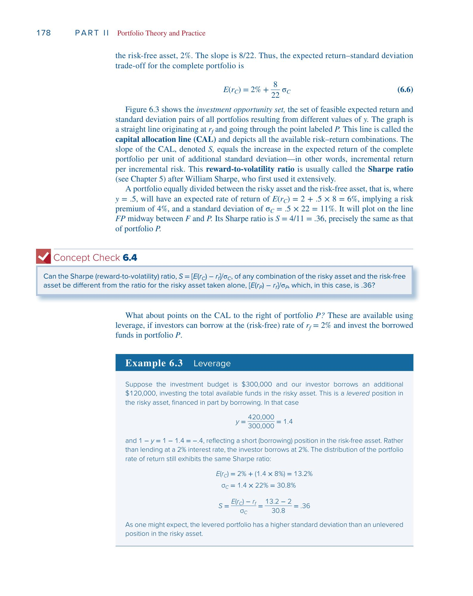
$y = 420000/300000 = 1.4, \quad 1-y = -0.4$ $E(r_C) = 2 + 1.4 \times 8 = 13.2%, \quad \sigma_C = 1.4 \times 22 = 30.8%$ $S = (13.2-2)/30.8 = 0.36 \quad \text{Sharpe ratio 没变！}$
这个点仍在 CAL 延长线上，在 $P$ 的右上方。
3.4 借贷利率不同时的折点
现实中借款利率 $r_f^B$ 通常高于无风险利率 $r_f$。书中假设 $r_f^B = 4%$。
- 贷出区间（$y \leq 1$）：斜率 $= (10-2)/22 = 8/22 = 0.36$
- 借入区间（$y > 1$）：斜率 $= (10-4)/22 = 6/22 = 0.27$
CAL 在 $P$ 点出现 折点（kink），借入段更平坦——杠杆的"性价比"更差。
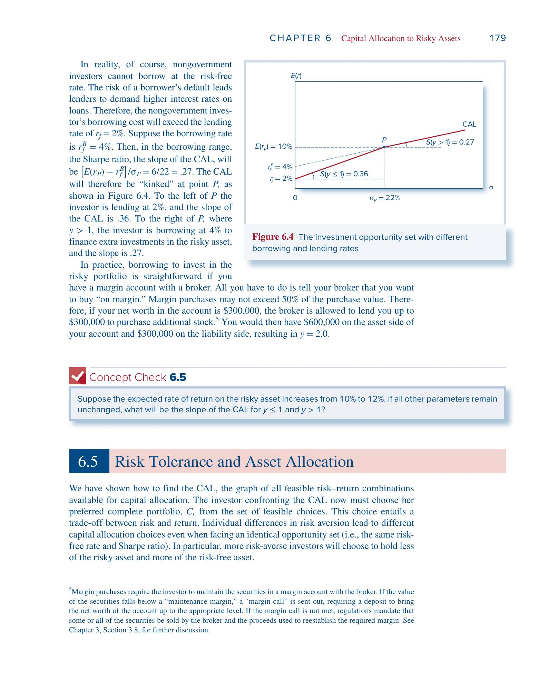
Concept Check 6.5： 如果 $E(r_P)$ 从 10% 增到 12%，其他不变。贷出段斜率 $=(12-2)/22 = 10/22 = 0.45$，借入段 $=(12-4)/22 = 8/22 = 0.36$。都变陡了，因为风险组合更有吸引力了。
实际操作： 通过券商的 保证金账户（margin account） 加杠杆。法规规定保证金购买不能超过购买价值的 50%，所以账户净值 $300,000 最多借 $300,000，$y$ 最大 2.0。
四、最优配置（Optimal Allocation）
4.1 代数求解
投资者要选择 $y$，使得完整组合的效用最大：
$\max_y ; U = r_f + y[E(r_P)-r_f] - \frac{1}{2}A,y^2,\sigma_P^2$
当 $y$ 从 0 开始增加，期望收益增加的好处大于风险增加的惩罚，效用上升。但超过某个点后，风险惩罚增长得更快（因为它是 $y^2$ 的函数，而收益只是 $y$ 的线性函数），效用开始下降。
Table 6.4 和 Figure 6.5 展示了 $A=4$ 时效用随 $y$ 的变化：
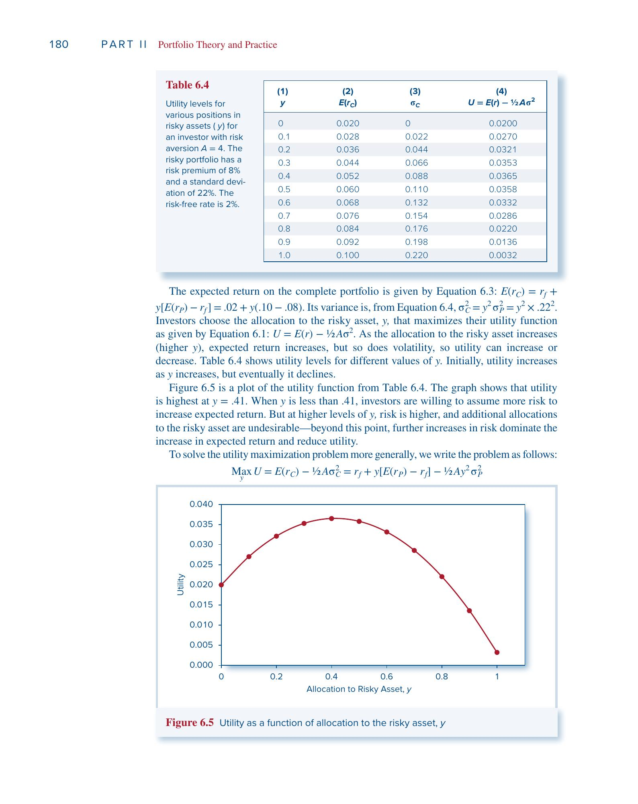
用微积分求解：对 $U$ 关于 $y$ 求导令其为零：
$\frac{dU}{dy} = [E(r_P) - r_f] - A,y,\sigma_P^2 = 0$
解出最优风险资产配置比例：
$y^* = \frac{E(r_P) - r_f}{A,\sigma_P^2} \tag{6.7}$
这是本章最重要的结果之一。
4.2 $y^*$ 的三个决定因素
| 因素 | 在公式中的位置 | 影响 |
|---|---|---|
| 风险溢价 $E(r_P)-r_f$ | 分子 | 越大 → $y^*$ 越大（回报好就多投） |
| 风险厌恶 $A$ | 分母 | 越大 → $y^*$ 越小（越保守投越少） |
| 方差 $\sigma_P^2$ | 分母 | 越大 → $y^*$ 越小（风险大投越少） |
4.3 数值例子（Example 6.4）
$y^* = \frac{0.10-0.02}{4 \times 0.22^2} = \frac{0.08}{0.1936} = 0.41$
即 41% 放在风险组合，59% 放在无风险资产。
$E(r_C) = 2 + 0.41 \times 8 = 5.28%$ $\sigma_C = 0.41 \times 22 = 9.02%$ $S = 3.28/9.02 = 0.36 \quad \text{Sharpe ratio 不变}$
4.4 图形理解：无差异曲线与 CAL 的切点
将无差异曲线和 CAL 画在同一张图上。投资者要在 CAL 上找到能触及的最高无差异曲线。
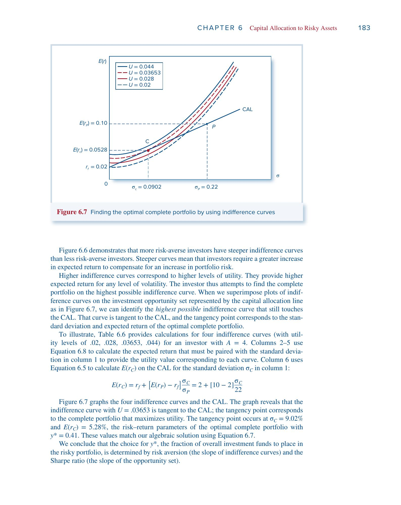
书中画了四条无差异曲线（$U = 0.02, 0.028, 0.03653, 0.044$）和 CAL：
- $U = 0.02$ 和 $0.028$：跟 CAL 相交——还有更好的选择
- $U = 0.03653$：跟 CAL 相切——这就是最优点，切点处 $\sigma_C=9.02%$，$E(r_C)=5.28%$
- $U = 0.044$：跟 CAL 不相交——想要但够不到
代数方法和图形方法殊途同归，最优解完全一致。
最优配置由两个因素的"碰撞"决定：
- CAL 的斜率（Sharpe ratio）= 市场给你的风险-收益权衡
- 无差异曲线的斜率（由 $A$ 决定）= 你个人的风险态度
同样的 CAL，$A$ 大的人切点靠左下（少投风险资产）；$A$ 小的人切点靠右上（多投风险资产）。
4.5 Concept Check 6.6
(a) $A$ 从 4 变成 3：$y^* = 0.08/(3 \times 0.0484) = 0.55$。风险厌恶降低，投得更多。
(b) 借款利率高于贷出利率只影响想借钱加杠杆的人（$y>1$）。$y \leq 1$ 的人不借钱，不受影响。$y=1$ 的分界线对应 $A = (E(r_P)-r_f)/\sigma_P^2 = 0.08/0.0484 = 1.65$。$A < 1.65$ 的人想借钱，会受影响。
五、非正态收益的补充
前面的分析隐含假设收益率服从正态分布——正态分布完全由 $E(r)$ 和 $\sigma$ 描述，所以效用公式就够了。
但现实中收益率分布可能有 肥尾（fat tails）——极端事件（如 2008 金融危机）发生的概率比正态分布预测的大得多。这类事件叫 黑天鹅（black swans）。
投资者还应关注：
- 在险价值（Value at Risk, VaR）：给定置信水平下最坏能亏多少
- 期望损失（Expected Shortfall, ES）：极端情况下平均亏多少
建议：用正态分布分析作为基准（benchmark），面对肥尾分布时适当减少 $y$。
六、被动策略与资本市场线（CML）
6.1 被动策略（Passive Strategy）
不做个股分析，直接持有两样东西：
- 无风险资产（T-bills 或货币市场基金）
- 宽基市场指数基金（如 S&P 500 或 Vanguard Total Stock Market Index Fund）
两个理由支撑被动策略的合理性：
理由一：成本低。 主动策略要么花时间自己研究，要么付管理费给基金经理。被动基金管理费极低（如 Vanguard 500 Index Fund 是所有股票基金中费率最低的）。
理由二：搭便车效应（free-rider benefit）。 大量聪明的主动投资者的竞争使资产价格大致合理。既然价格已经合理，被动策略不一定比主动差。实际数据显示，被动指数基金在过去几十年跑赢了大多数主动管理基金。
6.2 资本市场线（Capital Market Line, CML）
当风险组合 $P$ 特指市场组合时，CAL 就叫做 资本市场线（Capital Market Line, CML）。CML 本质上就是 CAL，只不过风险组合特指市场组合。
Table 6.7 给出了 1927–2021 年美国股票市场的历史表现：
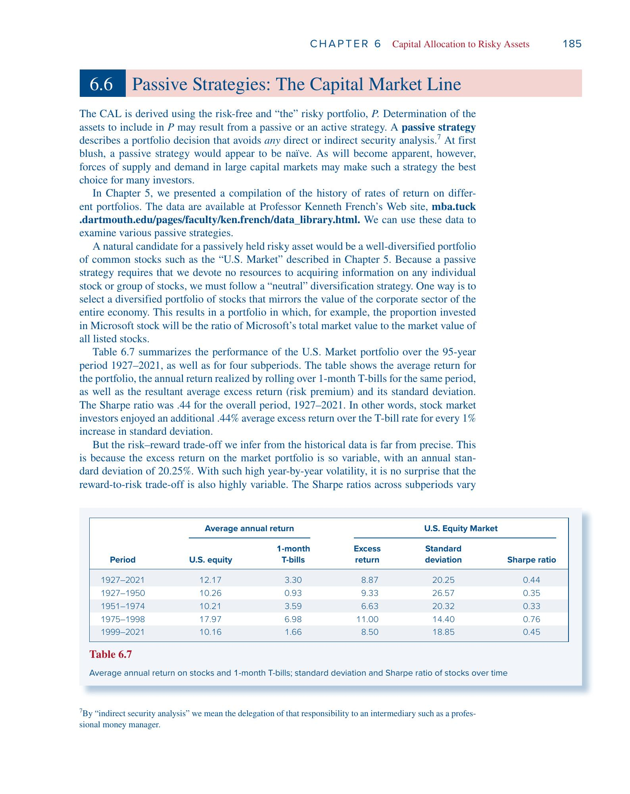
95 年间：风险溢价 8.87%，标准差 20.25%，Sharpe ratio 0.44。
但子期间差异很大（Sharpe ratio 从 0.33 到 0.76，相差超过两倍），说明用历史数据预测未来的风险-收益权衡非常不精确。
6.3 反推代表性投资者的 $A$
美国家庭约 69.3% 的净资产在风险资产中，即 $y^* \approx 0.693$。
$0.693 = \frac{0.0887}{A \times 0.2025^2} \quad \Longrightarrow \quad A = \frac{0.0887}{0.693 \times 0.0410} = 3.12$
与文献估计的 2.0–4.0 范围一致。
Concept Check 6.7： 如果市场预期不变但更多钱转去了 T-bills（$y$ 变小），根据 $y^* = \frac{E(r_P)-r_f}{A\sigma_P^2}$，只能是 $A$ 变大了——投资者变得更加保守了。
七、变量分类总览
| 类别 | 变量 | 说明 |
|---|---|---|
| 市场给的（客观） | $r_f$ | 无风险利率，直接观测 |
| $E(r_P)$ | 风险组合期望收益，需要估计 | |
| $\sigma_P$ | 风险组合标准差，需要估计 | |
| $r_f^B$ | 借款利率（如加杠杆） | |
| 投资者自身（主观） | $A$ | 风险厌恶系数，因人而异 |
| 投资者的决策 | $y$ | 风险资产占比，唯一决策变量 |
| 由上面算出来的 | $y^*$ | 最优配置比例 |
| $E(r_C), \sigma_C$ | 完整组合的收益和风险 | |
| $U$ | 效用值 = 确定性等价收益率 | |
| $S$ | Sharpe ratio |
$A$、$E(r)$、$\sigma$ 确定之后，$U$ 就唯一确定了。$U$ 不是纯主观的"我觉得值多少分"，而是一个特定的人面对一个特定的组合时，由公式计算出来的满意度。主观的部分已经通过 $A$ 编码进了公式里。
决策流程：确定你是谁（$A$）→ 看市场有什么（$r_f, E(r_P), \sigma_P$）→ 代入公式算 $y^*$ → 得到最优完整组合。
八、核心公式一览
| 公式 | 编号 | 用途 |
|---|---|---|
| $U = E(r) - \frac{1}{2}A\sigma^2$ | (6.1) | 效用打分 / 确定性等价 |
| $r_C = yr_P + (1-y)r_f$ | (6.2) | 完整组合收益率 |
| $E(r_C) = r_f + y[E(r_P)-r_f]$ | (6.3) | 完整组合期望收益 |
| $\sigma_C = y\sigma_P$ | (6.4) | 完整组合标准差 |
| $S = \frac{E(r_P)-r_f}{\sigma_P}$ | (6.5) | Sharpe ratio = CAL 斜率 |
| $E(r_C) = r_f + S \cdot \sigma_C$ | (6.6) | CAL 方程 |
| $y^* = \frac{E(r_P)-r_f}{A\sigma_P^2}$ | (6.7) | 最优风险资产配置比例 |
| $E(r) = U + \frac{1}{2}A\sigma^2$ | (6.8) | 无差异曲线方程 |
九、关键术语表
| 英文 | 中文 | 含义 |
|---|---|---|
| risk premium | 风险溢价 | 期望收益超过无风险利率的部分 |
| fair game | 公平博弈 | 风险溢价为零的风险投资 |
| risk averse | 风险厌恶 | $A > 0$，对风险施加惩罚 |
| utility | 效用 | 对组合的满意度分数 |
| certainty equivalent rate | 确定性等价收益率 | 使投资者无差异的无风险收益率 |
| risk neutral | 风险中性 | $A = 0$，只看期望收益 |
| risk lover | 风险爱好 | $A < 0$，风险增加效用 |
| mean-variance criterion | 均值-方差准则 | 用 $E(r)$ 和 $\sigma$ 判断支配关系 |
| indifference curve | 无差异曲线 | 同一效用水平的组合连线 |
| complete portfolio | 完整组合 | 风险资产+无风险资产的整体 |
| risk-free asset | 无风险资产 | 如 T-bills，$\sigma = 0$ |
| capital allocation line (CAL) | 资本配置线 | 所有可行风险-收益组合的直线 |
| Sharpe ratio | 夏普比率 | 每单位风险的超额收益 |
| passive strategy | 被动策略 | 不做个股分析，持有指数基金 |
| capital market line (CML) | 资本市场线 | 风险组合为市场组合时的 CAL |
| leverage | 杠杆 | 借钱投资，$y > 1$ |
十、一句话总结
市场告诉你机会长什么样（$r_f, E(r_P), \sigma_P$），你自己的性格决定了你多怕风险（$A$），两者一碰就算出你该怎么分配（$y^*$），图形上就是无差异曲线与 CAL 的切点。